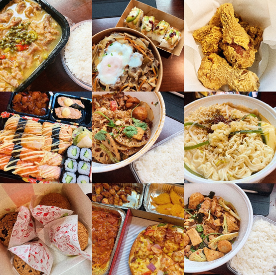

An email was sent to every students’ mailbox on March 16 announcing the suspension of in-person learning at Syracuse University for the remainder of the spring semester. This small email changed everyone’s lives.
Schools around the country canceled in-person classes because of COVID-19, and international students began snapping up airline tickets to return to their home countries. No matter how hard the journey, no matter whether they needed to quarantine and regardless of the high price, almost everyone joined the fierce battle to find flights.
I wanted to return to my family in China, but I decided to wait for two months to try and buy my ticket home. In the meantime, I experienced countless ticket cancellations. One after another, quickly-shifting travel restrictions and changing schedules left me on my toes. But after days and nights of trying to grab tickets, I finally embarked on the long trip home.
After more than 40 hours in a plane traveling across the world, I finally landed in Guangzhou, China. The warmth of the motherland mixed with the warm weather in southern China welcomed me back, and I started my 14-day quarantine life.

The quarantine conditions were one person per hotel room, with someone stopping by to take my temperature every day at 9 a.m. and 4 p.m. Meals could be delivered from outside restaurants or ordered from the hotel. Because the location of my hotel was very good, I often chose takeaway meals.
From my experience, quarantine went by actually quite fast, even though I had finished all my spring courses at that time and was already on summer vacation. Because of the jet lag, I also got up early in the morning.
After breakfast, I usually read a book or watched a movie, and the morning would pass quickly. After lunch, because I have to take my temperature in the afternoon, I had one or two hours to nap and more time to read books and watch dramas after I woke up. Jet lag played a huge role during the isolation period. I went to bed and got up early every day, bringing a sense of health to the isolation that was originally stuffy in the room.
My life in isolation turned into food appreciation more than anything else. I started to think about what I wanted to eat that day as soon as I opened my eyes. I wasn’t even very worried about possible COVID-19 exposure from takeaway food. This was a relief compared to the two months of home isolation in the United States.
While in the U.S., I was very uneasy about the world outside of my room. Generally, I cooked for myself. Even if I ordered takeout, I fully disinfected the package of food. I lived in a tense atmosphere almost every day. Therefore, my cooking skills improved greatly during the quarantine period, one good thing to come out of that experience.
After returning to China, it was completely different. For any takeaway, the body temperature of the cooks and the delivery person are clearly indicated on the outer packaging of food, making it very reassuring.
The biggest gain during the quarantine period was learning to be alone with myself. At the beginning of spring break, I basically stayed alone for two months. Apart from online communication, I was nearly always by myself. Emotional breakdowns were not uncommon, but the most important thing is to collect yourself. I tried all kinds of methods, and the most effective one was to arrange things for myself every day so that my life was full, and I wouldn’t feel lonely or bored.
I chose to continue my fall semester in China and take classes remotely from home. China has now entered a mostly normal life, but people still wear masks consciously when in public and cooperate with the work of taking body temperatures. It is hard to imagine the tension in the city more than half a year ago, when everything started, compared to the calm it exhibits today.
Back in February, when the pandemic was just beginning to reach the U.S., the atmosphere of panic began to spread in the circle of international students first, and the originally-peaceful study life was suddenly completely disrupted. However, it’s important to keep in mind that even now, with the pandemic in the U.S. still prevalent, our future is unknown.
WeMedia Lab